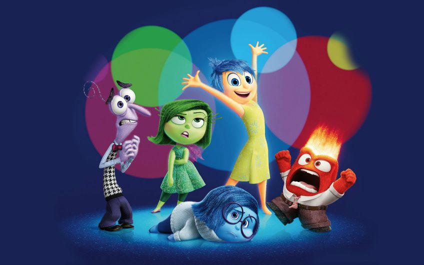

Название статьи
Каждому человеку важно иметь взаимопонимание с близкими и родными людьми, с друзьями, с коллегами по работе, и в целом с окружающим миром. Но даже близкие люди, придерживаются своих собственных убеждений, имеют свой характер, настроение. Все эти различия выстраивают барьеры во взаимопонимании и создают конфликты в общении.
Обида, страх, гнев, злость — эти и другие негативные проявления крадут положительный вклад с эмоционального счета доверия и в итоге могут полностью его опустошить. В сильном эмоциональном состоянии мы перестаем себя контролировать, и в итоге можем наговорить лишнее, наломать много дров. Придя в себя, мы осознаём, что погорячились, следовала прежде всё взвесить.